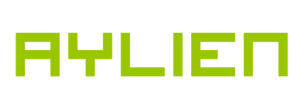

Class Extractor is an OS X® application that uses natural language processing to determine what the most important concepts in a class are. All the student needs is an audio recording of the professor lecturing. Students can then use this information to organize and prioritize their studying.
Important concepts are conveyed to the user using two interfaces: Word Cloud and Timeline. Word Cloud is a series of circles whose sizes are directly correlated to the importance of their represented topics. Topic importance is also portrayed by the color of the cloud; more important topics are a deep red, with successively less important concepts becoming a royal purple.
Timeline, the second interface, shows a temporal overview of topic discussion throughout a single lecture. Armed with this interface, students can see how different topics overlap and interrelate.
Bio:
Elliot Liskin is majoring in Computer Science with a concentration in Software Engineering and Application Development and minoring in Business Administration. He originally hails from New York, and his hobbies include app development and radio broadcasting.
Documentation:
This app was built using Xcode™ 7.3 (7D175) on OS X® 10.11.4 (15E65).
To run Class Extractor, simply double click on the application icon (or run it from Xcode™), and click "Select Audio File." This button opens up a file picker that allows you to navigate to and pick the audio file you want to analyze. This file must be of an audio type. Before selecting "Open," make sure that you are connected to the internet and have a solid connection; once that button is pressed, Class Extractor will send the file to IBM Watson™ for speech-to-text transliteration.
If running the app from Xcode™, you will have to create a trial account on IBM Bluemix™ and obtain a set of keys to allow Class Extractor to access the IBM Watson™ APIs. Once the keys have been obtained, run a project-wide case insensitive search (cmd+shift+f) for "credentials," and set the first variable to your keys in the form of [USERNAME]:[PASSWORD]. The same must be done for the Mashape™ keys; navigate to this URL and obtain keys for Aylien, setting the second occurence of "credentials" to those keys.
Once the text has been received and Class Extractor has analyzed it, Class Extractor will present the data using the two interfaces described above. You can switch between the interfaces using the segmented control at the bottom of the window.
Project documents can be found below:
NSF Proposal:
NSF Proposal Revision:
Functional Specification: here
Business Plan and Social Impact: here
Design Document 1 - Users and Use Cases:
Design Document 2 - Components and Interfaces:
Final Presentation Slides:
Screen Cast:
The Design Document: here
OS X and Xcode are trademarks of Apple Inc.
IBM Watson and IBM Bluemix are trademarks of International Business Machines Corporation.
Mashape is a trademark of Mashape Inc.
Text Analysis by Aylien API
